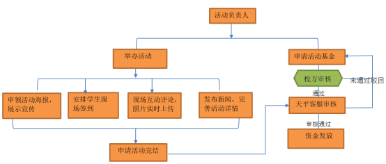

校园活动基金
1、申请对象：在校学生，为人品行端正，无不良记录，有组织领导能力，因组织校园活动急需资金扶持的。
2、申请周期：同一高校的同一学生组织，每5个工作日限申请一次，每月申请限3次。
3、活动有效期限30天，自发起人申请活动基金当天起算，超过期限视为放弃基金申请，特殊情况可联系天平客服协商解决。
4、需在活动开始前发起活动基金申请，活动结束后3日内申请完结活动，否则视为自动放弃本次申请。
1、活动新闻：活动举办前、中、后的新闻文稿，需在PU平台发布。
2、图片：活动团体合照、谢幕获奖集合照等，严禁重复照片。
3、PU元素宣传海报：海报宣传需在该校区各个宣传栏展示，拍照记录。
4、活动视频：以抽选现场完整节目视频为主，每段视频时长可控制在5-10分钟之间。
5、评论数：严禁刷评，同一个人不可刷多条评论，若类似情况则视作1条。
1、以签到人数确定档次及基准金额。
2、在该档次范围内，达到或高于相应数量标准的，取得所对应的分值，未达到数量标准的计零分。
3、另有天平客服审核附加分，最低零分，最高0.3分。
4、全部得分累计相加后乘以基准金额所得出的数值，就是最终可以得到的活动基金金额。
5、总分低于0.6分的不予发放活动基金。
1、登录PU发起活动并申请基金；联系本校校园管理人员申领PU海报，添加设计活动信息，并在张贴宣传时留下影像材料（照片即可）；
2、联系本校校方人员（一般为老师或有权限管理的学生）对自己在PU上发起的活动基金申请进行校方审核；
3、活动期间安排现场同学使用PU签到与现场互动，并完善活动详情；
4、申请完结活动，等待基金审核结果。
1、所有申请者需提供身份证、姓名、学校、学号。
2、收款人员需为实名认证用户。
3、审核通过后7-15个工作日资金发放到账。